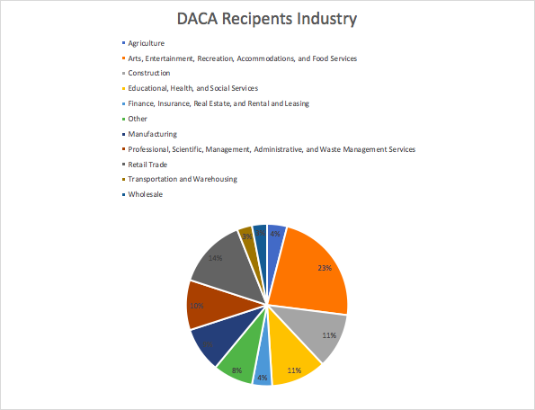

In 2012, then President Barack Obama provided a glimmer of hope for undocumented children living in the United States. The Deferred Action for Early Childhood Arrivals (DACA) allowed hundreds of thousand of undocumented children the ability to attend college, get workers permits and fulfill the American Dream. Nearly 700,000 DACA recipients live in the United States as of August 2018, according to the latest report released by U.S Immigration and Customs Enforcement. However, this safe haven has been completely left up in air under the Trump Administration. In September of 2017, President Donald Trump called for an end of DACA. The executive order was nulled and, he forced Congress to pass legislation that would create a law. The future of DACA and the lives of thousands have now been left in the hands of legislators. In addition, the amount of initial applications has decreased to nearly zero. Under the Trump administration the amount of initial applications has fallen by 60,000, according to data released by U.S Immigration and Customs Enforcement. This dramatic fall has left many eligible DACA recipients, who fell short of the age requirement to apply for the protection, out of the ability to apply.
In the case of renewal applications, they have fluctuated. However, the number of renewals has decreased. If these rates continue, many DACA recipients status would expire and would be forced to lose their jobs, driver’s licenses and even access to higher education.
As of 2018, DACA recipients live across the country. However, they are most populated in California, Texas, Illinois and New York. In fact, nearly a third of DACA recipients live in California, according to the, U.S Immigration and Customs Enforcement.
Since 2012, individuals who were granted DACA have entered various parts of the economy. Nearly a quarter of DACA recipients have entered the foodservice industry followed by retail and construction industry, according to a report released by the American Action Forum in early 2018. While some media outlets have characterized as lazy and taking up U.S resources, the report found that 52 percent of DACA recipients are employed just under the national average of 54 percent.
The research also conducted a cost-benefit analysis of DACA recipients The report revealed that the benefit of DACA individuals far outweigh the cost. According to the report, keeping these individuals costs U.S $7.4 billion while these immigrants pump 10.4 billion to the U.S economy. If forced to leave, this would cost the U.S 3.4 billion in addition to it lose in GDP, which was estimated to be just above 40 billion.
Since the Trump Administration called to end of the program, elected leaders in the House and the Senate have been scrambling to come up with legislation to save these individuals. The Dream and Promise Act of 2019 would provide a path of citizenship to nearly 2.5 million undocumented individuals including TPS recipients. Last week, the House of Representatives passed the bill with a 237-187 vote. It is now on to a Republican led Senate, where it will face many roadblocks.